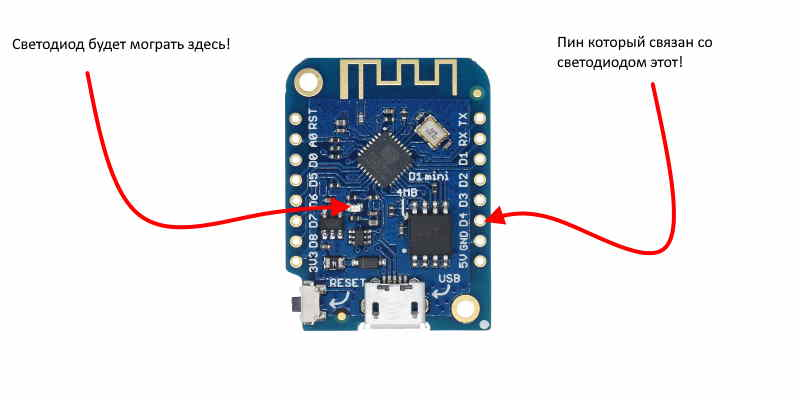

Здесь расположены небольшие скетчи (прошивки) для esp8266 для быстрой проверки различных плат и пр.
Здесь расположены небольшие скетчи (прошивки) для esp8266 для быстрой проверки различных плат и пр.
Популярный Blink для могргания светодиодом встроенным в плату, некоторые считают что моргание нечто примитивное, но как вам такое весь интернет это могание светодиодом, предача 0 и 1 !
void setup() { // функция настроек и разового ввода данных
pinMode(2, OUTPUT); // инициализация контакта Wemos D1 Mini светодиод на GPIO2 (D4)
}
void loop() { // Функция бесконечного цикла
digitalWrite(2, 1); // светодиод загорается
delay(1000); // ожидание в течение 1 секунды
digitalWrite(2, 0); // светодиод гаснет
delay(500); // ожидание в течение 500 милисекунд (пол секунды)
}
}
